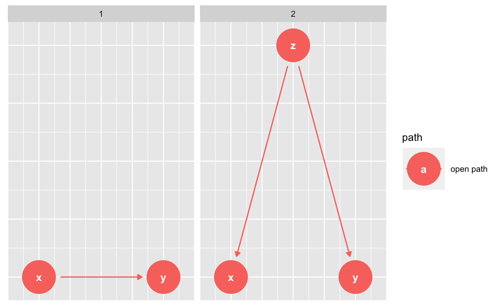

node_paths finds the pathways between a given exposure and outcome.
ggdag_paths plots all pathways. See dagitty::paths() for details.
dag_paths(.dag, from = NULL, to = NULL, adjust_for = NULL, directed = FALSE, paths_only = FALSE, ...) ggdag_paths(.tdy_dag, from = NULL, to = NULL, adjust_for = NULL, directed = FALSE, shadow = FALSE, ..., node_size = 16, text_size = 3.88, label_size = text_size, text_col = "white", label_col = text_col, node = TRUE, stylized = FALSE, text = TRUE, use_labels = NULL) ggdag_paths_fan(.tdy_dag, from = NULL, to = NULL, adjust_for = NULL, directed = FALSE, ..., spread = 0.7, node_size = 16, text_size = 2, label_size = text_size, text_col = "white", label_col = text_col, node = TRUE, stylized = FALSE, text = TRUE, use_labels = NULL)
| .dag, .tdy_dag | input graph, an object of class |
|---|---|
| from | character vector of length 1, name of exposure variable. Default
is |
| to | character vector of length 1, name of exposure variable. Default is
|
| adjust_for | character vector, a set of variables to control for.
Default is |
| directed | logical. Should only directed paths be shown? |
| paths_only | logical. Should only open paths be returned? Default is
|
| ... | additional arguments passed to |
| shadow | logical. Show edges not in path? Ignored if |
| node_size | size of DAG node |
| text_size | size of DAG text |
| label_size | size of label text |
| text_col | color of DAG text |
| label_col | label color |
| node | logical. Should nodes be included in the DAG? |
| stylized | logical. Should DAG nodes be stylized? If so, use
|
| text | logical. Should text be included in the DAG? |
| use_labels | a string. Variable to use for |
| spread | the width of the fan spread |
a tidy_dagitty with a path column for path variables
and a set grouping column or a ggplot
